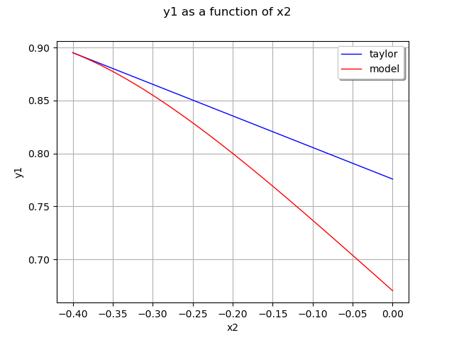
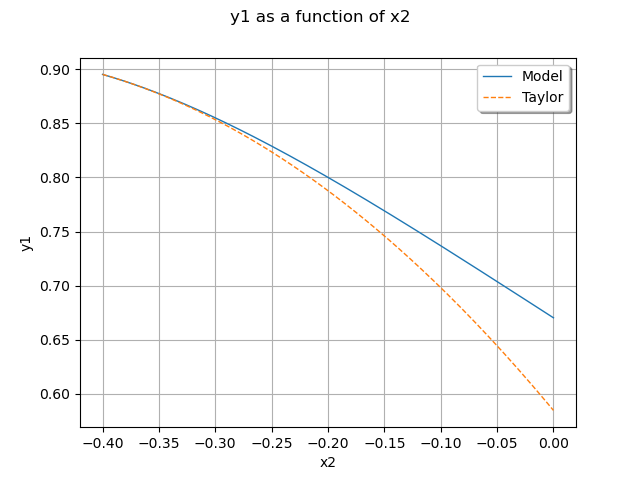

Note
Go to the end to download the full example code
Taylor approximations¶
In this example we build a local approximation of a model using the
Taylor decomposition using the LinearTaylor class.
We consider the function  defined by:
defined by:
![h(\vect{x}) = \left( \cos(x_1 + x_2), (x_2 + 1) e^{x_1 - 2 x_2} \right).]()
for any  .
The metamodel
.
The metamodel  is is an approximation of the model
is is an approximation of the model  :
:

for any .
In this example, we consider two different approximations:
the first order Taylor expansion,
the second order Taylor expansion.
import openturns as ot
import openturns.viewer as viewer
from matplotlib import pylab as plt
ot.Log.Show(ot.Log.NONE)
Define the model¶
Prepare some data.
formulas = ["cos(x1 + x2)", "(x2 + 1) * exp(x1 - 2 * x2)"]
model = ot.SymbolicFunction(["x1", "x2"], formulas)
Center of the approximation.
x0 = [-0.4, -0.4]
Drawing bounds.
a = -0.4
b = 0.0
First order Taylor expansion¶
Let  be a reference point where
the linear approximation is evaluated.
The first order Taylor expansion is:
be a reference point where
the linear approximation is evaluated.
The first order Taylor expansion is:
![\widehat{h}(\vect{x}) \,
= \, h(\vect{x}_0) \, +
\, \sum_{i=1}^{n_{X}} \; \frac{\partial h}{\partial x_i}(\vect{x}_0).\left(x_i - x_{0,i} \right)]()
for any .
Create a linear (first-order) Taylor approximation.
algo = ot.LinearTaylor(x0, model)
algo.run()
responseSurface = algo.getMetaModel()
Plot the second output of our model with  .
.
graph = ot.ParametricFunction(model, [0], [x0[1]]).getMarginal(1).draw(a, b)
graph.setLegends(["Model"])
curve = (
ot.ParametricFunction(responseSurface, [0], [x0[1]]).getMarginal(1).draw(a, b).getDrawable(0)
)
curve.setLegend("Taylor")
curve.setLineStyle("dashed")
graph.add(curve)
graph.setLegendPosition("topright")
graph.setColors(ot.Drawable.BuildDefaultPalette(2))
view = viewer.View(graph)

Second order Taylor expansion¶
Let be a reference point where
the quadratic approximation is evaluated.
The second order Taylor expansion is:
![\widehat{h}(\vect{x}) \, = \,
h(\vect{x}_0) \, + \, \sum_{i=1}^{n_{X}} \;
\frac{\partial h}{\partial x_i}(\vect{x}_0).\left(x_i - x_{0,i} \right) \, +
\, \frac{1}{2} \; \sum_{i,j=1}^{n_X} \;
\frac{\partial^2 h}{\partial x_i \partial x_j}(\vect{x}_0).\left(x_i - x_{0,i} \right).\left(x_j - x_{0,j} \right)]()
for any .
Create a quadratic (second-order) Taylor approximation.
algo = ot.QuadraticTaylor(x0, model)
algo.run()
responseSurface = algo.getMetaModel()
Plot second output of our model with .
graph = ot.ParametricFunction(model, [0], [x0[1]]).getMarginal(1).draw(a, b)
graph.setLegends(["Model"])
curve = (
ot.ParametricFunction(responseSurface, [0], [x0[1]]).getMarginal(1).draw(a, b).getDrawable(0)
)
curve.setLegend("Taylor")
curve.setLineStyle("dashed")
graph.add(curve)
graph.setLegendPosition("topright")
graph.setColors(ot.Drawable.BuildDefaultPalette(2))
view = viewer.View(graph)
plt.show()
